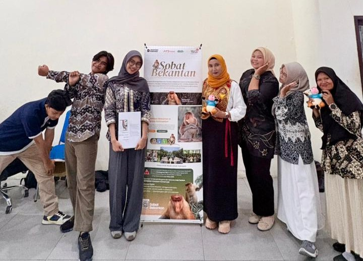

Tentang Bekantan Conservation
AYS Indonesia yang berdedikasi pada konservasi bekantan & pelestarian ekosistem mangrove dalam upaya
menyelamatkan keanekaragaman hayati
Kalimantan.
Visi: konservasi berkelanjutan, riset ilmiah, aksi nyata, kolaborasi nasional dan
global.
- 🌱 Edukasi & Publikasi
- 🗺️ Data & Dokumentasi Lapangan
- 🤝 Kolaborasi Masyarakat & Peneliti
- 📊 Pelaporan Statistik Konsisten


